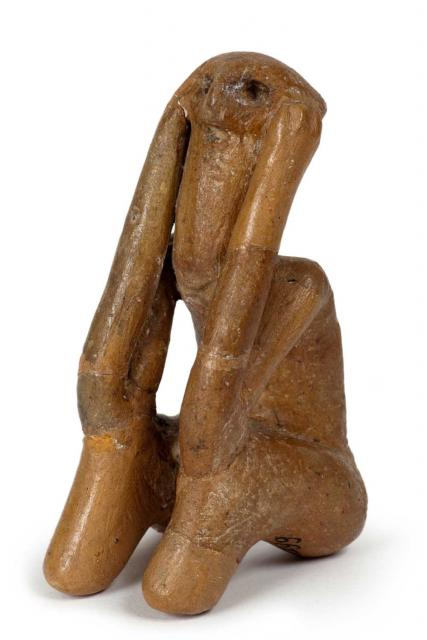
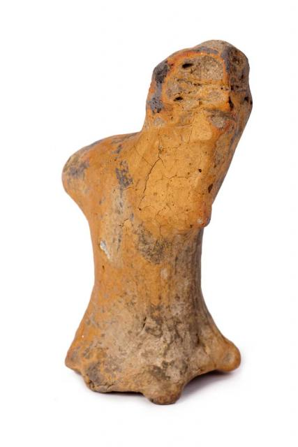
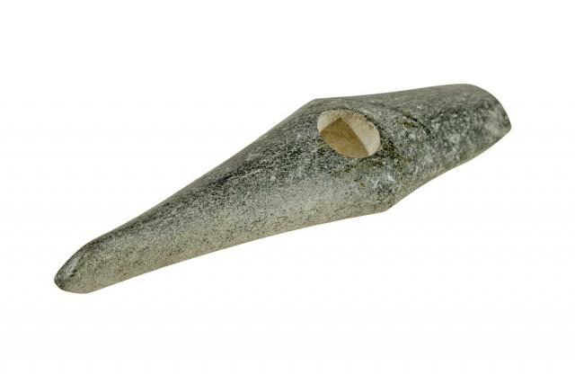

Anthropomorphic Vessel, Fired Clay
H. 24.2 cm; W. 17.5 cm Cucuteni, Tru?e?ti
H. 24.2 cm; W. 17.5 cm Cucuteni, Tru?e?ti
4200–4050 BC (Cucuteni A3) CMNM: 602
Anthropomorphic Vessel, Fired Clay
H. 12.2 cm; D. 5.2 cm Cucuteni, Scânteia
4200–4050 BC (Cucuteni A3) IAI: 3027
Female Figurine, Fired Clay
H. 23 cm; W. 7 cm Cucuteni, Dr?gu?eni
4050–3900 BC (Cucuteni A4) MJBT: 7558
Female Figurine Fired Clay
H. 21 cm; W. 4.8 cm Cucuteni, Ghel?ie?ti-Nedeia
3700–3500 BC (Cucuteni B1) CMJMPN: 4419
Female Figurine, Fired Clay
H. 18 cm; W. 3.6 cm Cucuteni, Ghel?ie?ti-Nedeia
3700–3500 BC (Cucuteni B1) CMJMPN: 4421
Female Figurine, Fired Clay
H. 24 cm; W. 3.6 cm Cucuteni, Ghel?ie?ti-Nedeia
3700–3500 BC (Cucuteni B1) CMJMPN: 4420
Female Figurine, Fired Clay
H. 22 cm; W. 5.2 cm Cucuteni, Ghel?ie?ti-Nedeia
3700–3500 BC (Cucuteni B1) CMJMPN: 4418
Female Figurine, Fired Clay
H. 11.5 cm; W. 4 cm Cucuteni, Tru?e?ti
4200–4050 BC (Cucuteni A3) MNIR: 81374
Female Figurine, Fired Clay
H. 17.5 cm; W. 3 cm Cucuteni, Vân?tori-Rufeni
3700–3500 BC (Cucuteni B1) MNIR: 81375
Figurine, Fired Clay
H. 8.5 cm; W. 2.5 cm Cucuteni, S?veni
4200–4050 BC (Cucuteni A3) MJBT: 17268
Figurine, Fired Clay
H. 13 cm; W. 4.5 cm Cucuteni, Scânteia
4500–3900 BC (Cucuteni A) IAI: 3039
Figurine, Fired Clay
H. 23.5 cm; W. 6.1 cm Cucuteni, Poduri-Dealul Ghindaru
3700–3500 BC (Cucuteni B1) CMJMPN: 18344
Set of Twelve Figurines, Fired Clay
H. max. 21.5 cm; W. max. 6 cm Cucuteni, Dume?ti
4200–4050 BC (Cucuteni A3) MJSMVS: 15844–15855
Set of Twenty-one Figurines and Thirteen Chairs
Fired Clay H. max. 8.6 cm; W. max. 4.7 cm
Cucuteni Poduri-Dealul Ghindaru 4900–4750 BC
(Pre-Cucuteni II) CMJMPN: 10095–10128, 10703

The “Thinker of Târpe?ti” Figurine, Fired Clay
H. 7.5 cm; W. 4 cm Cucuteni, Târpe?ti
4750–4500 BC (Pre-Cucuteni III) CMJMPN: 6618
Female Figurine, Fired Clay
H. 22 cm; W. 9.8 cm Hamangia, Baïa
5000–4600 BC MNIR: 11662
Female Figurine, Fired Clay
H. 15.5 cm; W. 5.5 cm Hamangia, Cernavod?
5000–4600 BC MNIR: 11663
Female Figurine, Fired Clay
H. 19 cm; W. 8 cm Hamangia, Baïa
5000–4600 BC MNIR: 11655
Female Figurine, Fired Clay
H. 10.7 cm; W. 7.4 cm Hamangia, Cernavod?
5000–4600 BC MNIR: 11660
Female Figurine, Fired Clay
H. 11.5 cm; W. 5.4 cm Hamangia, Cernavod?
5000–4600 BC MNIR: 15907
The “Thinker from Cernavod?”, Male Figurine, Fired Clay
H. 11.5 cm; W. 7.5 cm Hamangia, Cernavod?
5000–4600 BC MNIR: 15906
Anthropomorphic Vessel, Fired Clay
H. 16.5; D. 22 cm Gumelni?a, Gumelni?a
4600–3900 BC MNIR: 13812
Anthropomorphic Vessel, Fired Clay
H. 32.3 cm; D. 18 cm Gumelni?a, Sultana
4600–3900 BC MNIR: 102326
Anthropomorphic Vessel, Fired Clay
H. 22.5 cm; D. 20cm Gumelni?a, Gumelni?a
4600–3900 BC MNIR: 102312
Anthropomorphic Vessel with Lid, Fired Clay
H. 30 cm; D. 30 cm Gumelni?a, Sultana
4600–3900 BC MJITAGR: 2667–2668

Bowl with Pair of Figurines, Fired Clay
H. 9.4 cm; D. 22.8 cm Gumelni?a, Sultana
4600–3900 BC MJITAGR: 6690
Female Figurine, Bone
H. 10.3 cm; W. 3 cm Gumelni?a, Vit?ne?ti
4600–3900 BC MJITR: 24217
Female Figurine, Bone
H. 10.6 cm; W. 2.6 cm Gumelni?a, Vit?ne?ti
4600–3900 BC MJITR: 24216
Female Figurine, Bone
H. 9.5 cm; W. 3 cm Gumelni?a, Sili?tea
4600–3900 BC MJITR: 6349
Female Figurine, Bone
H. 7 cm; W. 2.4 cm Gumelni?a, Vit?ne?ti
4600–3900 BC MJITR: 25862
Female Figurine, Fired Clay
H. 8.5 cm; W. 4 cm Gumelni?a, C?scioarele
4600–3900 BC MNIR: 13726
Female Figurine
H. 8.3 cm; W. 3 cm Gumelni?a, Vit?ne?ti
4600–3900 BC MJITR: 25234
Figurine, Fired Clay
H. 5.4 cm; W. 4.3 cm Gumelni?a, Br?ili?a
4600–3900 BC MNIR: 73528
Figurine, Fired Clay
H.8 cm; W. 6 cm Gumelni?a, Cernavod?
4600–3900 BC MNIR: 32456
Head of Statuette, Fired Clay
H. 4.6 cm Gumelni?a, G?r?g?u
4600–3900 BC MNIR: 176062
Head of Statuette, Fired Clay
H. 4.5 cm; W. 15 cm Gumelni?a, Vidra
4600–3900 BC MNIR: 32806
Head of Statuette, Fired Clay
H. 9.2 cm; W. 8 cm Gumelni?a, Vidra
4600–3900 BC MNIR: 32449
Lid in the Shape of a Human Head, Fired Clay
H. 5 cm; D. 9 cm Gumelni?a, Sultana
4600–3900 BC MJITAGR: 2766
Anthropomorphic Vessel, Fired Clay
H. 18.3 cm; D. 10.4 cm Vin?a, Par?a
5000–4500 BC (Late Vin?a) MB: 26427
Anthropomorphic Vessel, Fired Clay
H. 11 cm; D. 8 cm Vin?a, Voivodina
5000–4500 BC (Late Vin?a) MB: 35921
Double-headed Figurine, Fired Clay
H. 6.9 cm; W. 7.4 cm Vin?a, Rast
5000–4500 BC (Late Vin?a) MNIR: 12100
Figurine, Fired Clay
H. 11.8 cm; W. 9 cm Vin?a, Liubcova
5000–4500 BC (Late Vin?a) MBM: 339
Figurine, Fired Clay
H. 12 cm; W. 6.5 cm Vin?a, Chi?oda Veche
5000–4500 BC (Late Vin?a) MB: 8192
Figurine of a Woman Nursing a Child, Fired Clay
H. 12.4 cm; W. 7.6 cm Vin?a, Rast
5000–4500 BC (Late Vin?a) MNIR: 12104
Anthropomorphic Appliqué, Fired Clay
H. 12; W. 16.8 cm V?dastra,V?dastra
5500–5000 BC MO: 4984
Anthropomorphic Vessel, Fired Clay
H. 43 cm; W. 41 cm V?dastra, V?dastra
5500–5000 BC MNIR: 15908
Double-headed Zoomorphic Vessel, Fired Clay
H. 15.7 cm; W. 15.3 cm V?dastra, V?dastra
5500–5000 BC MNIR: 15858
Anthropomorphic Vessel, Fired Clay
H. 21.5 cm; D. rim 13.2 cm; D. base 7.2 cm Banat, Par?a
5300–5000 BC (Early Banat) MNIR: 54748
Bear Statuette, Fired Clay
H. 6 cm; W. 4 cm Cucuteni, Ripiceni
4500–3900 BC (Cucuteni A) MJBT: 17216
Bowl with Handle in the Shape of a Bull’s Head
Fired Clay, H. 19.5 cm; D. 34.5 cm Cucuteni, Poiene?ti
4200–4050 BC (Cucuteni A3) IAI: 3000
Fragmentary Zoomorphic Statuette, Fired Clay
H. 4.5 cm; W. 4 cm Cucuteni, Epureni
4500–3900 BC (Cucuteni A) MJSMVS: 71
Goat Statuette, Fired Clay
H. 6.5 cm; W. 4.5 cm Cucuteni, Ruginoasa
4500–3900 BC (Cucuteni A) CMNM: 21876
Ram Statuette, Clay
L. 7.5 cm; H. 4.5 cm; W. 3.5 cm Cucuteni, Frumu?ica
3700–3500 BC (Cucuteni B) CMJMPN: 1283/86
Zoomorphic Statuette, Clay
L. 9 cm; H. 5 cm; W. 4.5 cm Cucuteni, Târpe?ti
4750–4500 BC (Pre-Cucuteni III) CMJMPN: 6653/1
Bull Statuette, Fired Clay
H. 10 cm; L. 14 cm Vin?a, Padea
5000–4500 BC (Late Vin?a) MO: 8359
Fragmentary Zoomorphic Statuette, Fired Clay
H. 8 cm; W. 5.5 cm Vin?a, Par?a
5000–4500 BC (Late Vin?a) MB: 21203

Bird Statuette, Fired Clay
H. 7.8 cm; W. 5 cm Gumelni?a, M?riu?a
4600–3900 BC MDJ: 53167
Fox Statuette, Fired Clay
L. 5.3 cm; W. 3.8 cm Gumelni?a, Pietrele
4600–3900 BC MNIR: 13724
Hedgehog Vessel, Fired Clay
D. 10.5 cm; W. 5.6 cm Gumelni?a, Vîn?torii Mici
4600–3900 BC MNIR: 291169
Zoomorphic Vessel, Fired Clay
H. 12.3 cm; L.18.4 cm Gumelni?a, Gumelni?a
4600–3900 BC MNIR: 13771
Zoomorphic Vessel, Fired Clay
H. 9.5 cm; L. 22.5 Gumelni?a, Calomfire?ti
4600–3900 BC MNIR: 13770
Zoomorphic Whistle, Fired Clay
H. 4.1 cm; L. 8.9 cm Gumelni?a, Hîr?ova
4600–3900 BC MINAC: 39487
Architectural Model, Fired Clay
H. 27 cm; L. 51 cm; W. 13 cm Gumelni?a, C?scioarele
4600–3900 BC MNIR: 12156
Architectural Model, Fired Clay
H.15.2 cm; W. 16.1 cm; L. 19.1 cm
Cucuteni, Poduri-Dealul Ghindaru
4750–4500 BC (Pre-Cucuteni III) CMJMPN: 13184
Architectural Model with Seven Figurines, Fired Clay
Model: H. 14.5 cm; D. max. 24.5 cm; D. base 11 cm
Cucuteni, Ghel?ie?ti 3700–3500 bc (Cucuteni B1)
CMJMPN: 12550–12552, 13209–13213
Offering Table, Fired Clay
H. 4.7 cm; L. 20.7 cm; W. 10.2 cm Cucuteni, Dr?gu?eni
4050–3900 BC (Cucuteni A4) MJBT: 17322
Offering Table, Fired Clay
H. 8 cm; L. 33 cm; W. 26 cm Boïan-Vidra, Li?coteanca
4900–4700 BC MBR: 13371
Offering Table, Fired Clay
H. 5.5 cm; D. 16 cm Star?evo-Cri?, Cîrcea
6200–5500 BC MO: 47473
Offering Table, Fired Clay
H. 9 cm; D. 12 cm Vin?a, Gornea
5000–4500 BC (Late Vin?a) MBM: 412
Pot Stand, Fired Clay
H. 22 cm; L. 30 cm Boïan-Vidra, Vidra
4900–4700 BC MNIR: 32433
Biconical Vessel, Fired Clay
H. 34 cm; D. 44 cm Cucuteni, Tru?e?ti
4200–4050 BC (Cucuteni A3) CMNM: 547
Bitronconical Vessel, Fired Clay
H. 32.3 cm; D. max. 36.7 cm Cucuteni, Dume?ti
4200–4050 BC (Cucuteni A3) MJSMVS: 13802
Bitronconical Vessel, Fired Clay
H. 51 cm; D. max. 52.4 cm Cucuteni, Dr?gu?eni-Boto?ani
4050–3900 BC (Cucuteni A4) MJBT: 799
Crater, Fired Clay
H. 29 cm; D. max. 30 cm Cucuteni, Dr?gu?eni-Boto?ani
4050–3900 BC (Cucuteni A4) MJBT: 781
Cup, Fired Clay
H. 11 cm; D. max. 13 cm Cucuteni, Bode?ti-Frumu?ica
4200–4050 BC (Cucuteni A3) CMJMPN: 998
Cup, Fired Clay
H. 10 cm; D. max. 11 cm Cucuteni, Dume?ti
4200–4050 BC (Cucuteni A3) MJSMVS: 16358
Globular Vessel with Lid, Fired Clay
H. max. 97.2 cm; D. max. 25 cm Cucuteni, Scânteia
4200–4050 BC (Cucuteni A3) CMNM: 17266, 19266
Ladle, Fired Clay
L. 23.5 cm; D. 10 cm Cucuteni, Poduri-Dealul Ghindaru
4450–4200 BC (Cucuteni A2) CMJMPN: 17935
Ladle, Fired Clay
L. 23.5 cm; D. 10 cm Cucuteni, Tru?e?ti
4450–4200 BC (Cucuteni A2) CMJMPN: 17936
Pot stand, Fired Clay
H. 36 cm; D. 25 cm Cucuteni, Dr?gu?eni-Boto?ani
4050–3900 BC (Cucuteni A4) MJBT: 832
Stemmed Cup, Fired Clay
H. 35.3 cm; D. 15 cm Cucuteni, Poduri-Dealul Ghindaru
4450–4200 BC (Cucuteni A2) CMJMPN: 17473
Vessel, Fired Clay
H. 20 cm; D. max. 25 cm Cucuteni, Dr?gu?eni
4050–3900 BC (Cucuteni A4) MJBT: 17325
Amphora, Fired Clay
H. 30 cm; D. max. 28 cm Cucuteni, Vorniceni
4050–3700 BC (Cucuteni A-B1) MJBT: 17311
Biconical Vessel, Fired Clay
H. 58 cm; D. max. 64 cm Cucuteni, Vorniceni
4050–3850 BC (Cucuteni A-B1) MJBT: 17308
Bowl, Fired Clay
H. 20.5 cm; D. max. 44 cm Cucuteni, Vorniceni
4050–3850 BC (Cucuteni A-B1) MJBT: 17365
Crater, Fired Clay
H. 48 cm; D. max. 35 cm Cucuteni, Traian
4050–3700 BC (Cucuteni A-B2) MNIR: 13787
Double stand, Fired Clay
H. 22 cm; L. 27 cm Cucuteni, Vorniceni
4050–3700 BC (Cucuteni A-B1) MJBT: 17225
Lobate Vessel, Fired Clay
H. 16 cm; D. 18.5 cm Cucuteni, Calu-Piatra ?oimului
3900–3700 BC (Cucuteni A-B2) CMJMPN: 4450
Amphora, Fired Clay
H. 47cm; D. max. 38 cm Cucuteni, Poduri-Dealul Ghindaru
3700–3500 BC (Cucuteni B1) CMJMPN: 16422
Biconical Vessel, Fired Clay
H. 36 cm; D. max. 38 cm Cucuteni, ?ipeni?
3700–3500 BC (Cucuteni B2) MNIR: 15894
Biconical Vessel with Lid, Fired Clay
H. (with lid) 69 cm; D. max. 47.5 cm Cucuteni, Ghel?ie?ti
3700–3500 BC (Cucuteni B1) CMJMPN: 4282/1–2
Binocular Vessel, Fired Clay
H. 18 cm; W. 40 cm Cucuteni, Ghel?ie?ti
3700–3500 BC (Cucuteni B1) CMJMPN: 12173
Bitronconical Vessel, Fired Clay
H. 33.3 cm; D. max. 45.2 cm Cucuteni, Valea Lupului
3700–3500 BC (Cucuteni B2) CMNM: 706
Crater, Fired Clay
H. 34 cm; D. max. 50 cm Cucuteni, Valea Lupului
3700–3500 BC (Cucuteni B2) CMNM: 704
Crater, Fired Clay
H. 20 cm; D. 25.2 cm Cucuteni, Târgu Ocna
3700–3500 BC (Cucuteni B2) MNIR: 69638
Lid, Fired Clay
H. 13.5 cm; D. 30.5 cm Gumelni?a, Sultana
4600–3900 BC MJITAGR: 3074
Vessel with Lid, Fired Clay
H. 22 cm; D. rim 21.6 cm; D. base 10.1 cm;
D. max. 35.9 cm Gumelni?a, Sultana
D. max. 35.9 cm Gumelni?a, Sultana
4600–3900 BC MJITAGR: 3063, 3072
Stemmed Bowl, Fired Clay
H. 23 cm; D. 28.7 cm V?dastra, F?rcar?ele-Olt
5500–4800 BC MO: I.8278
Stemmed Bowl, Fired Clay
H. 27.4 cm; D. 22.4 cm Boïan-Vidra,
Vidra-M?gura T?tarilor 4900–4700 BC MNIR: 32435
Axe, Copper
L. 35.2 cm; W. 6 cm
Bodrogkeresztúr Culture, Sfârna?
4000–3500 BC MNIR: 15917
Axe, Copper
L. 20.5 cm; W. 4.7 cm Bodrogkeresztúr Culture, Poiana
4000–3500 BC MNIR: 15887
Axe, Copper
L. 25 cm; W. 6.1 cm Cucuteni, Bogd?ne?ti
3700–3500 BC (Cucuteni B) CMNM: 740
Axe, Copper
L. 16.5 cm; H. 2 cm; W. 4 cm Gumelni?a, Glina
4600–3900 BC MNIR: 14051
Axe, Stone
L. 18 cm; H. 10 cm; W. 7 cm Cucuteni, Ciurea
3700–3500 BC (Cucuteni B) CMNM: 643
Axe, Marble
L. 15.5 cm; H. 7 cm Globular Culture, Scheia
3900–3600 BC CMNM: 7081
Dagger, Copper
L. 15 cm; W. 3 cm Cucuteni, Mere?ti
4500–3900 BC (Cucuteni A) MJIBV: 7060
Pintadera, Fired Clay
H. 4.9 cm; L. 5.9 cm Cucuteni, Calu-Piatra ?oimului
4450–4200 BC (Cucuteni A2) CMJMPN: 5646
Pintadera, Fired Clay
H. 4.1 cm; L. 4.5 cm Cucuteni, Bode?ti-Frumu?ica
4450–4200 BC (Cucuteni A2) CMJMPN: 1227
Pintadera, Fired Clay
H. 2.3 cm; D. 4.2 cm Cucuteni, Ruginoasa
4500–3900 BC (Cucuteni A) CMNM: 21858
Pintadera, Fired Clay
H. 3.5 cm; D. 4.3 cm Cucuteni, Ige?ti
4500–3900 BC (Cucuteni A) MJSMVS: 1752
Pintadera, Fired Clay
H. 5 cm; L. 7 cm Star?evo-Cri?, Poiene?ti
6200–5500 BC MJSMVS: 17479
Pintadera, Fired Clay
H. 4.7 cm; L. 5.2 cm Star?evo-Cri?, Bursuci
6200–5500 BC MJSMVS: 923

Pintadera, Fired Clay
H. 2.6 cm; L. 5.3 cm Star?evo-Cri?, Perieni
6200–5500 BC CMNM: 286
Pintadera, Fired Clay
H. 5 cm; D. 7.3 cm Gumelni?a, Vadul Catagatei
4600–3900 BC MBR: 6019
Pintadera, Fired Clay
H. 6.7 cm; D. 12 cm Gumelni?a, Gradistea Ulmilor
4600–3900 BC MDJ: 24806
Pintadera, Fired Clay
H. 4 cm; D. 6.2 cm Gumelni?a, Br?ili?a
4600–3900 BC MIG: 2847
Pintadera in the Shape of a Left Leg, Fired Clay
H. 6.6 cm; D. 3–6 cm Star?evo-Cri?, Z?uan
6200–5500 BC MJIAZ: 25/1977
Anthropomorphic Appliqué, Gold
H. 9.7 cm; W. 7.3 cm Bodrogkeresztúr Culture, Moigrad
4000–3500 BC MNIR: 54572
Anthropomorphic Appliqué, Gold
H. 9.7cm; W. 7.3 cm Bodrogkeresztúr Culture, Moigrad
4000–3500 BC MNIR: 54573
Anthropomorphic Appliqué, Gold
H. 8.5cm; W. 8 cm Bodrogkeresztúr Culture, Moigrad
4000–3500 BC MNIR: 54571
Anthropomorphic Figure, Gold
H. 31.4 cm; W. 24.1 cm Bodrogkeresztúr Culture, Moigrad
4000–3500 BC MNIR: 54570
Bracelet, Spondylus
D. 11.5 cm; Thickness 0.8 cm Hamangia, Cernavod?
5000–4600 BC MNIR: 11666
Bracelet, Spondylus
D. 9.2 cm Hamangia, Limanu
5000–4600 BC MINAC: 4275
Bracelet, Bone
Bead: L. 2.9–3.1 cm Hamangia, Cernavod?
5000–4600 BC MNIR: 11669–11673
Bracelet, Copper
D. max. 5.1 cm; D. thread 0.35 cm; H. 1.8 cm Cucuteni,
H?b??e?ti 4500–3900 BC (Cucuteni A) MNIR: 12171
Spiral Bracelet, Copper
D. max. 6.4 cm, D. thread 0.4 cm; H. 4.6 cm
Cucuteni, H?b??e?ti 4500–3900 BC
(Cucuteni A) MNIR: 12166
Bracelet (26 Beads), Shell
Bead: H. max. 1–1.5 cm; D. max. 1–1.4 cm
Cernavod? I, Vadul Catagatei
4000–3200 BC MBR: 10528
Bracelet (63 Beads), Copper, Glass
Bead: max. H. 0.4 cm; D. 0.6 cm
Cernavod? I, Vadul Catagatei
4000–3200 BC MBR: 10533
Disk, Flint
D. 10.5 cm Foltesti, Vadul Catagatei
4000–3900 BC MBR: 10535
Necklace, Bone
Bead: H. 2–2.4 cm; W. 0.6–1 cm Boïan, Andolina
5000–4500 BC MDJ: 9165–9188
Necklace, Ankle Bone
L. 2.4–3.3 cm; W. 1.4 cm; H. 1.75–2.1 cm Gumelni?a, Hîr?ova
4600–3900 BC MINAC: 39491
Necklace (156 Beads), Spondylus
H. 0.4–0.6 cm; W. 0.8 cm; Thickness 0.3 cm Foltesti,
Vadul Catagatei 4000–3900 BC MBR: 10525
Necklace (234 Beads), Spondylus
Bead: L. 0.2–0.5 cm; D. 0.3–0.6 cm
Hamangia, Limanu 5000–4600 BC MINAC: 5469
Necklace (24 Beads), Malachite
D. 0.5–0.6 cm; Thickness 0.3 cm Boïan-Vidra, Cioc?ne?ti
4900–4700 BC MDJ: 1277–1300
Necklace (263 Beads), Spondylus
Bead: max. L. 0.7; D. 0.6 cm Hamangia, Limanu
5000–4600 BC MINAC: 5468
Necklace (28 Beads), Shell
L. 0.1–0.3 cm; D. 0.3–0.5 cm Boïan-Vidra, Gradistea Ulmilor
4900–4700 BC MDJ: 26728–26755
Necklace (93 Beads), Spondylus and Copper
Bead: max. L. 0.5 cm; D. 0.5 cm Gumelni?a, Br?ili?a
4600–3900 BC MBR: 10524
Pendant, Bone
L. 6 cm; H. 3.5 cm Vin?a, Chi?oda Veche
5000–4500 BC (Late Vin?a) MB: 8290
Pendant, Gold
L. 2.6 cm; W. 1.5 cm Cucuteni, Traian
4050–3700 BC (Cucuteni A-B) MNIR: 9025
Spiral Bracelet, Copper
L. 12.5 cm; D. 7 cm Cucuteni, Ariu?d
4500–3900 BC (Cucuteni A) MJIBV: 550
Amulets (7), Gold
D. 1.7–2.0 cm; H. 1.8–2.2 cm
Varna, Varna, Grave 36 4400–4200 BC
Varna Museum: 1650–1656 (first and second rows)
Appliqués (2), Gold
H. 0.8–1.6 cm; D. 3.3–3.5 cm Varna, Varna, Grave 36
4400–4200 BC Varna Museum: 1639, 1640
(second row, center)
Appliqués (10), Gold
D. 2.1–2.3 cm Varna, Varna, Grave 36
4400–4200 BC Varna Museum: 1687, 1688, 1697, 1706,
1709, 1710, 1712, 1713, 1716, 1719 (third and fourth rows)
Animal-Head Appliqués (10), Gold
L. 2.8–4.1 cm; H. 1.2–2.1 cm Varna, Varna, Grave 36
4400–4200 BC Varna Museum: 1658, 1659, 1664, 1668,
1669, 1673, 1677, 1679, 1680, 1682 (fig. 9-7)
Astragal, Gold
L. 1.9 cm; H. 0.9 cm Varna, Varna, Grave 36
4400–4200 BC Varna Museum: 1636
Axe, Copper
L. 15.5 cm; W. 3.1 cm Varna, Varna, Grave 36
4400–4200 BC Varna Museum: 1746
Axe, Copper
L. 15.5 cm; W. 2.3 cm Varna, Varna, Grave 229
4400–4200 BC Varna Museum: 2422
Axe, Copper
L. 11.2 cm; W. 2.1 cm Varna, Varna, Grave 227
4400–4200 BC Varna Museum: 2420

Axe, Stone
L. 15.6 cm; W. 3.9 cm Varna, Varna, Grave 236
4400–4200 BC Varna Museum: 2437
Axe, Copper
L. 12.9 cm; W. 3.1 cm Varna, Varna, Grave 55
4400–4200 BC Varna Museum: 2434
Beads (2,110), Shell
L. 0.5–1.7 cm Varna, Varna, Grave 36
4400–4200 BC Varna Museum: 1751
Bracelets, Spondylus
H. 0.7 cm, 1.0 cm, 2.1 cm; D. 6.3 cm, 6.8 cm, 8.1 cm
Varna, Varna, Graves 97 and 158 4400–4200 BC
Varna Museum: 2965, 2967, 3326
Bracelets (2), Gold
D. 6.8–6.9 cm; H. 2.7 cm Varna, Varna, Grave 36
4400–4200 BC Varna Museum: 1631, 1632
Chisel, Copper
L. 23.5 cm; W. 1 cm Varna, Varna, Grave 151
4400–4200 BC Varna Museum: 2674
Diadem, Gold
H. 3.4 cm; D. 4.3 cm Varna, Varna, Grave 36
4400–4200 BC Varna Museum: 1635
Dog Statuette, Clay
H. 8 cm; L. 19.2 cm; W. 6.1 cm Varna, V. Golyamo Delchevo
4400–4200 BC Varna Museum: 3632
Female Figurine, Clay
H. 11.3 cm; W. 6.3 cm Varna, P.S. Strashimirovo
4400–4200 BC Varna Museum: 1238-5
Idol Figurine, Bone
H. 21.2 cm; W. 8.5 cm Varna, Varna, Grave 41
4400–4200 BC Varna Museum: 2903
Implements (2), Gold
Small: L. 5.5 cm; W. 8.8 cm. Large: L. 17.1 cm; W. 14.2 cm
Varna, Varna, Grave 36 4400–4200 BC
Varna Museum: 1637, 1638
Lamella, Flint
L. 37.7 cm; W. 3.8 cm Varna, Varna, Grave 63
4400–4200 BC Varna Museum: 2740
Lamella, Flint
L. 22.6 cm; W. 3.1 cm Varna, Varna, Grave 209
4400–4200 BC Varna Museum: 2372
Necklace with Pendant, Quartz, Gold
Amulet: H. 3.6 cm; D. 3.2 cm. Bead: D. 0.8–2.0 cm
Varna, Varna, Grave 97 4400–4200 BC
Varna Museum: 2271
Necklaces (3 long, 1 short), Gold
Bead: D. 0.3–1.1 cm Varna, Varna, Grave 36
4400–4200 BC Varna Museum: 1737–1739, 1741
Hair Pin, Copper
L. 16.9 cm; W. 4.5 cm Varna, Varna, Grave 167
4400–4200 BC Varna Museum: 2679
Rings (2 large, 4 small), Gold
D. 1.8–32.5 cm Varna, Varna, Grave 36 4400–4200 BC
Varna Museum: 1722, 1724, 1726, 1731, 1732, 1735
Scepter (9 elements), Gold
L. 22.5 cm; W. 5.3 cm Varna, Varna, Grave 36
4400–4200 BC Varna Museum: 1641–1649
Spear Head, Copper
L. 25.8 cm; W. 3.1 cm Varna, Varna, Grave 97
4400–4200 BC Varna Museum: 2652
Strand of beads (66), Carnelian
Bead: L. 0.7–0.9 cm; D. 0.5–0.7 cm Varna, Varna, Grave 41
4400–4200 BC Varna Museum: 3111
Vessel, Marble
H. 4 cm; D. 12.2 cm Varna, Varna, Grave 209
4400–4200 BC Varna Museum: 2374
Zoomorphic “Bull” Figurines (2), Gold
H. 3.7–5.8 cm; L. 3.9–6.5 cm Varna, Varna, Grave 36
4400–4200 BC Varna Museum: 1633, 1634
Blade, Flint
L. 24 cm; W. 1.8–3.2 cm
Suvorovo-Novodanilovka, Giurgiule?ti, Grave 4
4500–4300 BC MNAIM: FB-27571-2
Boar-Tusk Pendant, Boar tusk
L. 13 cm; W. 2.2 cm
Suvorovo-Novodanilovka, Giurgiule?ti, Grave 3
4500–4300 BC MNAIM: FB-27571-40
Boar-Tusk Pendant with Perforations, Boar tusk
L. 16.6 cm; W. 2.7 ccm
Suvorovo-Novodanilovka, Giurgiule?ti, Grave 1
4500–4300 BC MNAIM: FB-27571-4
Conical Core or Nucleus, Flint
H. 11.1 cm
Suvorovo-Novodanilovka, Giurgiule?ti, Grave 3
4500–4300 BC MNAIM: FB-27571-42
Tubular Shaft Fittings (3), Gold
L. 2.8–3.5 cm; D. 1.5–1.8 cm
Suvorovo-Novodanilovka, Giurgiule?ti, Grave 4
4500–4300 BC MNAIM: FB-26256-26258
Necklace (129 Beads), Copper
Bead: D. 1 cm
Suvorovo-Novodanilovka, Giurgiule?ti, Grave 3
4500–4300 BC MNAIM: FB-27571-10
Necklace (154 Beads), Copper and Marble
Bead: D. 0.5–0.7 cm
Suvorovo-Novodanilovka, Giurgiule?ti, Grave 3
4500–4300 BC MNAIM: FB-27571-22
Necklace (35 Shells, 26 Beads)
Shell (Cardium edule, Mactra carolina)
Shell: 1.7–3 cm. Bead: 0.8–1.2 cm
Suvorovo-Novodanilovka, Giurgiule?ti, Grave 2
4500–4300 BC MNAIM: FB-27571-9
Necklace (420 Beads), Copper
Bead: D. 0.5–0.7 cm
Suvorovo-Novodanilovka, Giurgiule?ti, Grave 5
4500–4300 BC MNAIM: FB-27571-7
Spear Point, Antler
D. 0.4–1.8 cm; L. 14.6 cm
Suvorovo-Novodanilovka, Giurgiule?ti, Grave 4
4500–4300 BC MNAIM: FB-27571-29
Spear Foreshaft, Wood, antler, bone, and flint
L. 59 cm; W. 2.1–2.5 cm
Suvorovo-Novodanilovka, Giurgiule?ti, Grave 4
4500–4300 BC MNAIM: FB-27571-17
Spiral Bracelets (3), Copper
D. 9.2–9.9 cm; W. 2.4–3.2 cm
Suvorovo-Novodanilovka, Giurgiule?ti, Grave 5
4500–4300 BC MNAIM: FB-27571-12/13/14
Spiral Ornaments (2), Gold
D. max. 1.7 cm
Suvorovo-Novodanilovka, Giurgiule?ti, Grave 4
4500–4300 BC MNAIM: FB-26259/ FB-26260
Circlets of Beads (422 and 413 Beads), Shell (Coral)
Bead: D. 2.5–4 cm
Suvorovo-Novodanilovka, Giurgiule?ti, Grave 4
4500–4300 BC MNAIM: FB-27571-62/ FB-27571-63
Askos, Fired paste and splinters
H. 12 cm; D. 21 cm Cucuteni, Brad
4200–4050 BC (Cucuteni A3) MIR: 20276
Axe, Copper
L. 16 cm; W. 4 cm Cucuteni, Brad
4200–4050 BC (Cucuteni A3) MIR: 17575
Bracelet, Copper
D. 10 cm; W. 1.3 cm Cucuteni, Brad
4200–4050 BC (Cucuteni A3) MIR: 17576
Bracelet, Copper
D. 9 cm; W. 1.3 cm Cucuteni, Brad
4200–4050 BC (Cucuteni A3) MIR: 17577
Disks (2), Gold
D. 4.8–6.3 cm; Thickness 0.5 cm Cucuteni, Brad
4200–4050 BC (Cucuteni A3) MIR: 17573–17574
Disks (3), Copper
D. 2.9–5.2 cm Cucuteni, Brad
4200–4050 BC (Cucuteni A3) MIR: 17578–17580
Necklace (182 Beads), Stag teeth
Tooth L. 1–1.5 cm Cucuteni, Brad
4200–4050 BC (Cucuteni A3) MIR: 22475–22656
Necklace (262 Beads), Copper
Bead: D. 0.3 cm; W. 0.1–0.2 cm; Thickness 0.1 cm
Cucuteni, Brad 4200–4050 BC (Cucuteni A3) MIR: 22215–22474
Necklace (27 Beads), 12 Copper and 15 vitreous beads
Bead: D. 0.2–0.4 cm; L. 0.4–0.6 cm Cucuteni, Brad
4200–4050 BC (Cucuteni A3) MIR: 22181–22207
Lance, Flint
H. 5 cm; L. 11.7 cm Indo-European, F?lciu
4000 BC MVPB: 7983
Axe, Flint
H. 3 cm; L. 7.3 cm Indo-European, F?lciu
4000 BC MVPB: 7985
Arrow Point, Flint
H. 3 cm; L. 7 cm Indo-European, F?lciu
4000 BC MVPB: 7986
Arrow Point, Flint
H. 3 cm; L. 4.7 cm, Indo-European, F?lciu
4000 BC MVPB: 7987
Axe, Copper
H. 5 cm; L. 14 cm, Indo-European, F?lciu
4000 BC MVPB: 7984
Beads (7), Shell
Bead: D. 0.9–1.1 cm Indo-European, F?lciu
4000 BC MVPB: 7977–7983
Horse-Head Scepter, Stone
L. 17 cm; W. 7.5 cm Indo-European, Casimcea
4000 BC MNIR: 11650
Arrow Points (3), Flint
H. 3.5–4.5 cm; L. 5.5–7.5 cm, Indo-European, Casimcea
4000 BC MNIR: 11652–11654
Lances (2), Flint
L. 12–13.5 cm; H. 6.5–6.8 cm
Indo-European, Casimcea
4000 BC MNIR: 11647–11648
MJIAZ
Muzeul Jude?ean de Istorie ?i Art?, Zal?u
County Museum of History and Art, Zal?u
County Museum of History and Art, Zal?u
MJIBV
Muzeul Jude?ean de Istorie Bra?ov, Bra?ov
Bra?ov County History Museum, Bra?ov
Muzeul Jude?ean de Istorie Bra?ov, Bra?ov
Bra?ov County History Museum, Bra?ov
MJITAGR
Muzeul Jude?ean de Istorie “Teohari Antonescu,” Giurgiu
“Teohari Antonescu” History County Museum, Giurgiu
Muzeul Jude?ean de Istorie “Teohari Antonescu,” Giurgiu
“Teohari Antonescu” History County Museum, Giurgiu
MJITR
Muzeul Jude?ean de Istorie Teleorman, Alexandria
Teleorman County History Museum, Alexandria
Muzeul Jude?ean de Istorie Teleorman, Alexandria
Teleorman County History Museum, Alexandria
MJSMVS
Muzeul Jude?ean “?tefan cel Mare” Vaslui, Vaslui
“?tefan cel Mare” Vaslui County Museum, Vaslui
Muzeul Jude?ean “?tefan cel Mare” Vaslui, Vaslui
“?tefan cel Mare” Vaslui County Museum, Vaslui
MNIR
Muzeul Na?ional de Istorie a României, Bucure?ti
National History Museum of Romania, Bucharest
Muzeul Na?ional de Istorie a României, Bucure?ti
National History Museum of Romania, Bucharest
MO
Muzeul Olteniei, Craiova
Museum of Oltenia, Craiova
Muzeul Olteniei, Craiova
Museum of Oltenia, Craiova
MVPB
Muzeul “Vasile Pârvan,” Bârlad
“Vasile Pârvan” Museum, Bârlad
Muzeul “Vasile Pârvan,” Bârlad
“Vasile Pârvan” Museum, Bârlad
UAIC
Universitatea "Alexandru Ioan Cuza," Ia?i
The Alexandru Ioan Cuza University of Ia?i
The Alexandru Ioan Cuza University of Ia?i
Republic of Bulgaria:
Varna Museum
Regionalen Istoricheski Muzey, Varna
Regionalen Istoricheski Muzey, Varna
Varna Regional Museum of History
Republic of Moldova:
MNAIM
Muzeul Na?ional de Arheologie
?i Istorie a Moldovei, Chi?in?u
The National Museum of Archaeology
and History of Moldova, Chi?in?u
Muzeul Na?ional de Arheologie
?i Istorie a Moldovei, Chi?in?u
The National Museum of Archaeology
and History of Moldova, Chi?in?u